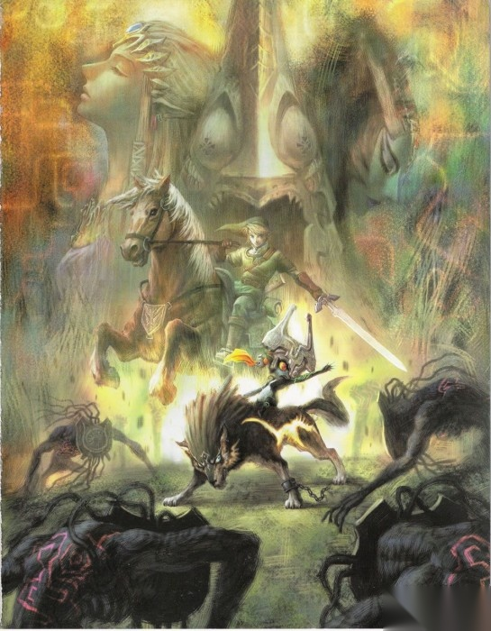
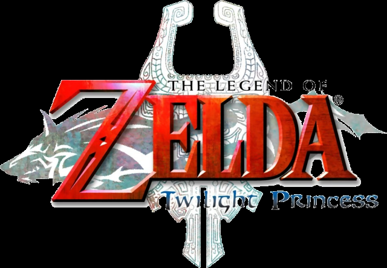

阅读建议
这一页更适合作为全站入口，而不是单纯的剧情摘要。它会先说明阅读顺序，再解释中文页目前保留了哪些内容、哪些部分仍在持续整理。
如果你准备完整阅读攻略，建议先看完本页，再进入角色页和章节页；如果你只是回来看某一段流程，也可以直接把这里当成全站导航索引。
引子
这是一页给中文读者的开场说明：它先交代这套攻略要覆盖什么、应该怎么读，再补上作品背景、版本差异和站点使用方式，方便你在进入正式章节前先建立整体印象。

这一页更适合作为全站入口，而不是单纯的剧情摘要。它会先说明阅读顺序，再解释中文页目前保留了哪些内容、哪些部分仍在持续整理。
如果你准备完整阅读攻略，建议先看完本页，再进入角色页和章节页；如果你只是回来看某一段流程，也可以直接把这里当成全站导航索引。
这页是整套攻略的中文导读。它不直接展开迷宫细节，而是先把路线结构、阅读方法和站点定位讲清楚，让你知道后面的章节页、角色页和附录页分别承担什么作用。
当前站点以英文主站为默认入口，中文页作为并行阅读层保留。也正因为如此，这一版中文导读会尽量把关键说明写得更完整，帮助读者在切换语言时仍能快速对上内容结构。
主线内容按九个章节展开，另外再补一页角色导览、一页终章回顾和一页大型附录。第一次通关的读者，最适合按章节顺序一路往下读；准备查漏补缺的玩家，则更适合把附录当成“补收集”和“补系统”的工具页来用。
换句话说，这个站点不是只为线性通关准备的。它既希望你能从第一页一路读到最后，也尽量让每一页都能单独承担“快速查一件事”的功能。
《The Legend of Zelda: Twilight Princess》在中文语境里常见多个译名，最常见的是“黄昏公主”或直接保留英文副标题。考虑到当前站点历史内容、目录结构和既有页面习惯，这里统一保留英文标题 Twilight Princess，并在中文叙述里尽量避免因为译名差异造成阅读跳出感。
从内容上看，这部作品最吸引人的地方在于节奏层次很完整：它先用奥尔丁村、牧场和村民关系建立日常感，再把玩家一步步推向被暮影侵蚀的海拉鲁、被隐藏的古代遗迹，以及最终涉及两个世界命运的主线冲突。

归档导读页中保留的 Twilight Princess 标志图。
如果你会对照老攻略、旧截图或自己的游玩记忆，这里有一个必须先知道的差异：Wii 版与 GameCube 版在地图左右方向上是镜像关系。任务逻辑、剧情推进和关键道具大体一致，但“东边还是西边”“左转还是右转”这类空间记忆经常会对不上。
因此本站更强调“流程顺序”和“目标判断”，而不是把它写成绝对方向地图。你在阅读时可以把截图和章节说明当作确认目标的参考，但遇到方位差异时，要优先记得平台镜像这件事。
如果你想按完整中文路线浏览，可以按照下面的顺序继续：
这套中文页保持与英文主站一致的顺序，方便你按同一节奏继续阅读 Twilight Princess 的主线与资料页。
{kind=link}
{kind=link}